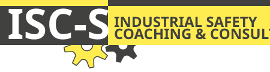
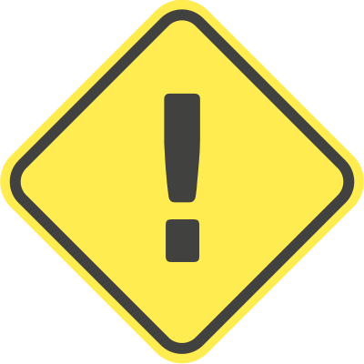

contact: bert.severijnen@isc-s.com
Bezoek op 6 mei 2026 de workshop van ISC-S op het Engineering Event Safety met als onderwerp:
Praktisch toepassen van de (initiële) Risicobeoordeling o.b.v. de EN‑ISO 12100, als verplichte stop voor CE markeringen van machines.

construction in progress